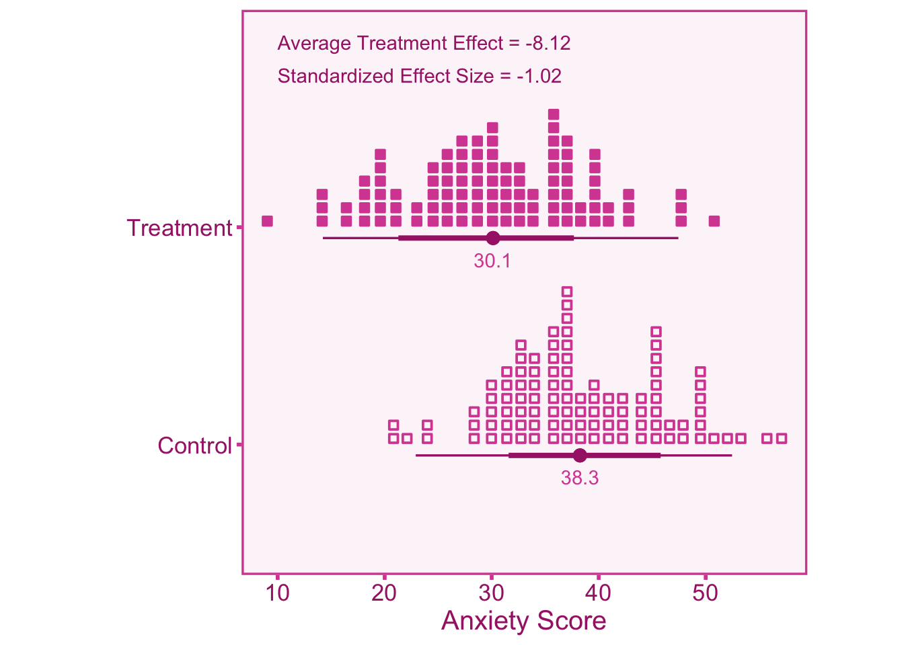

3.1 What are Effect Sizes?
Effect sizes are statistics that measure the magnitude of a relationship between two variables. It’s important to remember that effect sizes are a valuable tool, enabling researchers to extract meaningful insights from data, rather than being the ultimate objective themselves. Effect sizes aide in researcher’s ability to draw meaningful inferences from data and therefore it is crucial that they are accurate. Biased effect sizes can be likened to a foggy windshield. Just as condensation on glass obstructs a clear view of the road, biased effect sizes can obscure the true association between variables. Similar to how one must clean the windshield to drive safely, researchers must correct for biases in effect sizes to attain a clear and accurate perspective on their data. Correlation coefficients and standardized mean differences are two of the most common effect sizes and so they will be the primary focus of this book. To see how an effect size may look in practice, the example below will illustrate how calculating one may look in a clinical setting.
3.1.1 Applied Example
Lets say we want to test whether a new drug can alleviate anxiety, therefore we decide to conduct an experiment to see how well this drug performs. We first randomly assign each participant in the study to either a treatment group (\(T\)) or a control group (\(C\)). In our experiment we want test how well the experimental drug reduces anxiety, therefore we measure the subjects’ self reported anxiety after under-going the treatment. To see if the drug actually worked in alleviating anxiety, we want to compare the scores from the treatment group and the control group. To do this we can estimate the average treatment effect (\(ATE\)), which is the difference in the mean value of self-reported anxiety scores between the treatment group and the control group such that, \(ATE = \text{Mean}(X_T) - \text{Mean}(X_C)\). However, anxiety scores have no meaningful units, so if we obtain an \(ATE\) value of \(-3\) there is no way to tell if this value is large or small, since it is entirely dependent on how the anxiety scores are scaled. Standardization can allow us to draw meaningful inferences about the size of the effect that can be comparable across scales. We can standardize the \(ATE\) by dividing by the standard deviation of scores in the control group, (\(\text{SD}\)): \(\text{Effect Size} = \frac{ATE}{\text{SD}_C}\). The effect size is now on an interpretable scale (standard deviations). If we achieve an standardized effect size value of \(-0.50\), we can interpret this as the treatment group exhibiting a reduction in anxiety equivalent to half a standard deviation compared to the control group.
3.1.2 Defining effect sizes
Lets say we have an effect size of interest that quantifies the relationship between an independent and dependent variable. The population effect size can be denoted as \(\vartheta\), however this population value is unknown. We can obtain an estimate the population effect size by conducting a study on a sample drawn from the population and then calculating a study effect size, \(\theta\). The study effect size is a function of the population effect size and sampling error (\(\varepsilon\)) such that,
\[ \theta = \vartheta + \varepsilon \tag{3.1}\]
Effect sizes will differ from study to study, this can be due to two reasons: variance in population effect sizes (\(\sigma^2_\vartheta\)) or variance in sampling error (\(\sigma_\varepsilon\)). Accordingly, we can express the variance in study effect sizes (\(\sigma_\theta\)) as,
\[ \sigma^2_\theta = \sigma^2_\vartheta + \sigma^2_\varepsilon \]
If studies were drawing samples from the same population, the variance in the population effect size would be zero (\(\sigma^2_\vartheta = 0\)) and the expected value (i.e., the mean) of study effect sizes would be equal to the population effect size, \(\mathbb{E}[\theta]=\vartheta\).
3.2 Effect Sizes and Artifacts
In practice, observed effect size estimates are often biased relative to the true effect size of interest, that is, the observed population effect size (\(\vartheta_o\)) is a product of the true population effect size (\(\vartheta\)) and artifactual bias (\(a\)):
\[ \vartheta_o = a\vartheta \tag{3.2}\]
Note that if \(a=1\) this would indicate that there is no artifactual bias (\(\vartheta_o=\vartheta\)), if \(a>1\) then it would indicate effect size inflation (i.e., biased away from zero), and if \(a<1\) that would indicate effect size attenuation (i.e., biased toward zero). It can be seen in Equation 3.2 that we can re-arrange the formula to obtain the true population effect size by dividing the observed population effect size by \(a\),
\[ \vartheta = \frac{\vartheta_o}{a}. \]
For a single study that computes an effect size from a sample drawn from the population, the observed study effect size (\(\theta_o\)) would be expressed by
\[ \theta_o = \vartheta_o + \varepsilon_o \] Using Equation 3.2 we can express the observed effect size in terms of the true population effect size rather than the observed population effect size,
\[ \theta_o = a\vartheta + \varepsilon_o \] Then we can correct the observed effect size by dividing by the biasing factor, \(a\), to obtain an unbiased estimate of the true effect size:
\[ \theta_c = \frac{\theta_o}{a} \] The sampling error and it’s variance must also be corrected,
\[ \varepsilon_c = \frac{\varepsilon_o}{a} \] \[ \sigma_{\varepsilon_c}^2 = \frac{\sigma^2_{\varepsilon_o}}{a^2}. \] The corrected effect size should be an unbiased estimate of the true population effect size as long as the systematic bias multiplier is accurately measured (which is not a trivial task). It is important to note that the corrected effect size will not yield additional statistical power, that is, test-statistics and p-values will remain unchanged. We can demonstrate this mathematically that the z-statistic of the observed effect size (\(z_{\theta_o}\)) is identical to the z-statistic of the corrected effecct size (\(z_{\theta_c}\)),
\[ z_{\theta_o} = \frac{\theta_o}{\sigma_{\varepsilon_o}} = \frac{\frac{\theta_o}{a}}{\frac{\sigma_{\theta_o}}{a}} = \frac{\theta_c}{\sigma_{\varepsilon_c}} = z_{\theta_c} \]
3.3 Defining an Effect Size Estimand
An effect size estimand is the theoretical quantity that we are trying to estimate. Before delving into the application of correction factors, it is important to clearly define the effect size estimand you aim to capture, including the summary statistic, relevant variables, and the target population. This preliminary step might appear trivial, but it is crucial, as it determines the accuracy and relevance of any subsequent artifact corrections. For instance, consider a scenario where we conduct a study involving a sample of college students with the aim of generalizing our findings to the broader general population. In this context, it is important to correct for range restriction, given the evident selection effects that exist in the college student populations. However, if our sole objective is to draw conclusions pertaining exclusively to the college student demographic, correcting for range restriction would be inappropriate. Furthermore, let’s examine the variable of interest, such as grade-point average (GPA), within this population. Do we intend to focus solely on the raw GPA score, or is our goal to capture what GPA represents, namely, academic achievement? If our aim is to investigate the raw GPA score, then correcting for measurement error would be inappropriate. However, if our primary focus lies in assessing the student’s academic achievement, then it may be relevant to correct GPA scores for measurement error. Defining our estimand guides our approach to artifact correction and ensures that these correction procedures align with the underlying research goals.
3.4 Effect Size Notation
Because of the nature of the topic, this book will cover a large amount of equations and computer code. Therefore to make it as straight-forward as possible the notation will follow a systematic framework to distinguish between types of effect sizes. This book will only be covering two main types of effect sizes: correlations (\(r\)) and standardized mean differences (\(d\)). Throughout the book variations of \(r\) and \(d\) will show up frequently, these variations will be differentiated with subscripts that are consistent with that section. Also, to distinguish between population-level values (i.e., the effect size across all potential observations) and effect sizes specific to a study or sample (i.e., the effect size observed within a single sample drawn from the population), we will use the following notation:
- Arbitrary Effect Size
- Population value: \(\vartheta\)
- Study/sample value: \(\theta\)
- Correlations
- Population value: \(\rho\)
- Study/sample value: \(r\)
- Standardized Mean Differences
- Population value: \(\delta\)
- Study/sample value: \(d\)
In most cases, continuous independent variables will be denoted with \(x\) and dependent variables with \(y\) (note that this notation may differ when referring to observed and true scores). Categorical (i.e., groupings) variables will be denoted with \(g\) (this notation will be used primarily for standardized mean differences).
3.5 Correlations
A correlation describes the relationship between two continuous variables. The Pearson correlation coefficient was first introduced by Auguste Bravais (1844). Later developed by Karl Pearson, lending itself to the name.
3.5.1 Technical Overview Correlations (r)
If we draw a sample of \(n\) observations from a population, we can calculate the study correlation (\(r\)) between variables \(x\) and \(y\) using the following Pearson’s product-moment estimator,
\[ r = \frac{ \sum_{i=1}^{n}(x_i - \bar{x})(y_i - \bar{y}) }{ \sqrt{\sum_{i=1}^{n}(x_i - \bar{x})^2} \sqrt{\sum_{i=1}^{n}(x_i - \bar{x})^2} }. \tag{3.3}\]
For digestibility, we can break down the formula into parts. The correlation coefficient can be defined as the covariance between \(x\) and \(y\) standardized by the product of their standard deviations (i.e., square root variance),
\[ r = \frac{\sigma_{xy}} {\sigma_x\sigma_y}. \tag{3.4}\]
we can first define the covariance (\(\sigma_{xy}\)) as the average product of errors for \(x\) and \(y\),
\[ \sigma_{xy} =\frac{1}{n-1}\sum_{i=1}^{n}(x_i - \bar{x})(y_i - \bar{y}). \tag{3.5}\]
Then we can find the variance for \(x\) and \(y\) by taking the average squared error from the mean for \(x\) and \(y\),
\[ \sigma^2_x = \frac{1}{n-1}\sum_{i=1}^n (x_i - \bar{x})^2 \tag{3.6}\]
\[ \sigma^2_y = \frac{1}{n-1}\sum_{i=1}^n (y_i - \bar{y})^2. \tag{3.7}\]
Plugging in Equation 3.5, Equation 3.6, and Equation 3.7 into Equation 3.4 we can see that the term, \(\frac{1}{n-1}\), will cancel out and we will be left with the original pearson correlation coefficient formula from Equation 3.3,
\[ r = \frac{\sigma_{xy}}{\sigma_x\sigma_y} = \frac{\sum_{i=1}^{n}(x_i - \bar{x})(y_i - \bar{y})}{\sqrt{\sum_{i=1}^{n}(x_i - \bar{x})^2}\sqrt{\sum_{i=1}^{n}(x_i - \bar{x})^2}}. \tag{3.8}\]
In the absence of artifacts, the Pearson correlation \(r\) is an asymptotically (i.e., as \(n\) approaches infinity) unbiased estimator (in small sample sizes, it is biased see chapter 4). We can express \(r\) similarly to Equation 3.1,
\[ r = \rho + \varepsilon,\;\; \sigma_\varepsilon^2 = \text{Var}(\varepsilon). \tag{3.9}\]
Where \(\sigma^2_\varepsilon\) is the sampling variance of the observed correlation. The sampling variance can be calculated from the sample size (\(n\)) and the population correlation,
\[ \sigma_\varepsilon^2 =\frac{(1 - \rho^2)^2}{n}. \tag{3.10}\]
In practice, the population correlation is unknown so the study correlation can be used instead (\(r\)) in the above formula as an estimate of the population correlation. Note that the sampling variance is the square of the standard error.
In the context of artifacts, if the observed correlation is biased relative to the true correlation, we can see model the observed population (\(\rho_o\)) correlation as a function of the true population correlation (\(\rho\)) and a artifact biasing factor, \(a\),
\[ \rho_o = a\rho. \]
The observed study (sample) correlation would then be defined as,
\[ r_o = \rho_o + \varepsilon_o = a\rho + \varepsilon_o. \]
To obtain an unbiased estimate of the true population correlation, we can correct the correlation coefficient (\(r_c\)) by dividing by the biasing factor, \(a\),
\[ r_{c} = \frac{r_o}{a}. \]
Note that the sampling error would also need to be adjusted and therefore it’s sampling variance (\(\sigma_{\varepsilon_c}\)) would be corrected to be,
\[ \sigma^2_{\varepsilon_c} = \frac{\sigma^2_{\varepsilon_o} }{a^2}. \]
3.6 Standardized Mean Differences
Standardized mean differences are used to quantify the average difference in some variable between groups. The most commonly used formulation is Cohen’s \(d\) (Cohen 1988) which quantifies the average difference between groups (e.g., men vs. women) and standardizes by the pooled standard deviation. Note that the other most commonly used estimator is Hedges’ \(g\), but the difference between the two is a small sample correction factor that can be found in the chapter on small samples.
3.6.1 Technical Overview of Standardized Mean Difference (d)
If we draw a sample of \(n_A\) subjects from group \(A\) and \(n_B\) subjects from group \(B\), the mean difference between groups (\(d\)) on variable \(y\) can be defined as,
\[ d=\frac{\bar{y}_A - \bar{y}_B}{\sigma_p}. \]
Where the standardizer, \(\sigma_p\) is the pooled standard deviation between the two groups. The pooled standard deviation is calculated by taking the square root of the average variance between the two groups weighted by the degrees of freedom (e.g., \(\text{df}_A=n_A-1\)),
\[ \sigma_p=\sqrt{\frac{(n_A-1)\sigma^2_{A} + (n_B-1)\sigma^2_{B}}{n_A + n_B - 2}}. \]
Where \(\sigma_{A}\) and \(\sigma_{B}\) are the standard deviations of \(y\) within groups \(A\) and \(B\) respectively. This SMD estimator is commonly referred to as Cohen’s \(d\). We can define the study/sample \(d\) value as a function of the population \(d\) value (\(\delta\)): \[ d = \delta + \varepsilon. \] Similar to the previous section on correlation coefficients, the observed \(d\) value is a function of the true population value and an artifactual biasing factor (\(a\)),
\[ \delta_o = a\delta. \]
Therefore the observed study/sample \(d\) value can be defined as a function of the observed population value or the true population value and bias:
\[ d = \delta_o + \varepsilon_o = a\delta + \varepsilon_o. \]
Thus the corrected standardized mean difference (\(d_c\)) and it’s corresponding sampling variance (\(\sigma^2_{\varepsilon_c}\)) can both be defined as:
\[ d_c = \frac{d_o}{a} \]
\[ \sigma^2_{\varepsilon_c} = \frac{\sigma^2_{\varepsilon_o}}{a^2}. \]